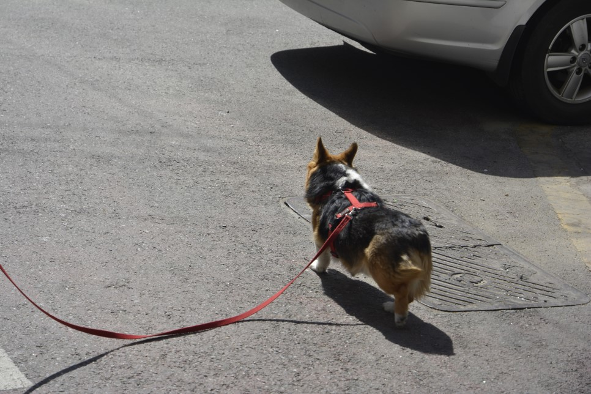

|
[산책] 가슴줄과 3미터 리드줄을 사용해보시는 건 어떨까요? 등록일:2023.01.27

행복하고 편안한 산책
저는 여러분이 반려견과 산책을 할 때 초크 체인을 사용하지 않았으면 좋겠습니다. 그리고 가능하면 H형 가슴줄을 사용하셨으면 좋겠습니다. 왜냐하면 H형 가슴줄이 반려견의 흉
부에 압박을 최소화하며 보행 시 반려견의 근육과 관절의 활동을 방해하지 않는다고 하기 때문입니다. 반려견의 몸이 편안하면, 보호자님 또한 편안한 산책을 하실 수 있을 겁니다.
H형 가슴줄 사용을 권장해드린지 그리 오래되지도 않았습니다. 5년 전쯤...
H형 가슴줄을 들고, 3미터 정도의 긴 줄을 하고는 이렇게 산책해도 편할 수 있다고 이야기하는 제가 그때는 사람들에게 조금 이상하게 보였나 봅니다. 목줄이나 초크 체인 사용이
더 익숙했던 사람들은 저를 꽤나 이상하게 쳐다봤습니다. 어떤 사람은 그런 가슴줄로 산책을 시키면 사냥개가 된다고 하는 분도 계셨고, 썰매개처럼 될 거라고 하는 분들도 계셨습
니다. 어떤 분은 쪽지로 "솔직하게 말해서 체인도 같이 쓰시죠?"라고 저를 의심하는 분들도 계셨습니다.
가슴줄이 어린 강아지의 흉골 발달을 방해해서 제대로 된 성장을 하지 못할 거라고 우려하는 분도 계셨지만, 우리 진돗개 믹스 바로는 지금 너무 잘 크고 잘 뛰다 못해... 아주 빠릅니
다. 사실 그때 조금 답답해서 관련된 글도 많이 올렸던 게 생각납니다.
저는 오래전부터 반려견을 교육하면서, 내가 교육을 하는 대상이 반려견이 아니라 보호자라는 것을 알고 있었습니다. 처음 이 사실을 깨달았을 때, 실망감과 설렘이 교차했던 것도
생각납니다. 내가 강아지를 열심히 교육해서 앉아도 잘하고, 엎드려도 잘하고 기다려도 잘하고 갖가지 재주도 잘 부리는데, 보호자는 내가 하는 것을 하나도 따라 하지 못했고 강아
지는 자기 보호자의 신호에 어리둥절하기만 했었습니다. 그때 저는 칭찬을 많이 받고 싶었지만, 그럴 수 없었고 그 결과 실망감이 컸었습니다.
그런데 보호자의 행동을 자세히 살펴보니 공통으로 잘못 보내는 신호가 있더군요. 그것을 바로잡아주니 신기하게도 보호자의 신호에도 반려견이 잘 반응하는 거였습니다. (그때
보호자는 `앉아`신호 다음에 엎드리게 하고 싶었는데, `엎드려`라는 신호(말)와 함께 반려견에게 한 발짝 다가가고 있었습니다. 앉아있던 반려견이 엎드리려면 앞가슴을 내려야
하는데, 정면에 있던 보호자가 순간 다가오는 행동을 하니 엎드릴 수 없었던 겁니다.)
보호자의 행동 하나하나를 조절하면서 가르쳐드리니, 반려견과 보호자의 호흡이 잘 맞았고 그런 것들이 다시 저를 설레게 했습니다. 보호자에게 반려견들의 행동을 설명하고, 공통
된 행동을 찾아주고 그 자리에서 직접 보여주는 것이 너무 재미있었고, 신기해하고 놀라고 가끔은 감동하는 보호자의 모습을 보는 것이 반려견 훈련사로서 얼마나 행복한 일인 줄
모릅니다.
물론, 설득이 잘되지 않는 경우도 많았습니다. 자신이 가지고 있었던 교육관을 한 사람으로 인해서 통째로 바뀌기는 쉽지 않은 일이니까요. 그럴 때는 한없이 이야기를 들어줬습니
다. 한없이, 한없이, 이야기를 들어주면서 왜 이렇게 가르치게 됐는지.. 정말 원했던 건 뭔지.. 앞으로 반려견과 어떻게 살고 싶은지.. 이렇게 한참을 이야기 들어주다 보면 보호자는
결국 저에게 물어봅니다.
"음.. 아까 그 교육은 어떻게 하는 거지요?" 유레카!
많은 사람이 가슴줄을 하고 긴 줄을 사용하며 산책을 안 해봤을 겁니다. 강압적으로 명령하고 못 움직이게 하는 것이 아니라, 내 옆으로 반려견이 원해서 오게 하는 것을 어떻게 하는
지 몰랐었을 겁니다. 내가 조금 반려견에게 끌려가면 무슨 큰일이 나는 건 줄 알았을 겁니다. 그냥 그때는 잘 몰랐을 겁니다. 휴우~ 솔직히 그때 얼마나 욕을 먹었던지...^^ 솔직히 속
상했던 적도 많았습니다.
그런데 지금, 많은 분이 보듬의 가슴줄을 사용하고 계십니다. H형 가슴줄을 쓰고, 3미터 리드줄을 사용해보고, 초크 체인과 짧은 리드줄보다 오히려 더 편안하고 안정적인 산책을
체감하시는 분들이 많이 계실 겁니다. 3년 전인가... 부산에서 보듬 가슴줄에 1.5미터 리드줄을 두 개를 길게 연결해서 산책하는 분을 우연히 본 적이 있었습니다. 얼마나 반갑고, 놀
라고, 기쁘고 좋던지.. 가지고 있던, 3미터 리드줄이라도 드리고 싶었는데 그렇게 못한 게 너무 아쉬웠습니다. 요즘은 산책하다 보면, 보듬 가슴줄과 보듬 리드줄을 사용하시는 분들
을 많이 만나게 됩니다. 시간만 되면 다가가서 잘 쓰고 계신지? 산책 때 어려운 건 없는지? 여쭙고 싶은 마음입니다. 지금은 보듬에서 만든 가슴줄뿐 만에 아니라, 다양한 업체에서
비슷한 가슴줄들을 만들어서 판매하고 있습니다. 좋습니다! 5년 전 그렇게 질타를 받을 때를 생각하면 지금은 천국이라고 생각합니다.
3미터의 긴 리드줄을 권장하는 이유
왜 3미터의 긴 리드줄을 권장할까요? 그 이유는 반려견의 시각적 능력 때문입니다. 반려견은 새로운 정보를 얻을 때 첫 번째 눈으로 보고, 두 번째 코로 확인합니다. 눈으로 새로운
정보를 확인하려면 충분한 거리가 필요한데, 그 거리가 바로 3에서 5미터입니다. 3미터 리드줄을 사용해서 산책하시면 반려견이 짧은 리드줄로 인해 어쩔 수 없이 통제받으며 내
옆에서 걷는 것이 아니라, 스스로 보호자와의 거리를 조절하며 즐거워한다는 것을 느끼실 수 있을 겁니다.
저는 반려견을 교육하고 보호자와 상담을 하면서 이 교육이 안 될 거라는 생각을 아예 하지 않습니다. 저는 보여줍니다. 내가 현재 얼마나 당신의 반려견을 관찰하고 있는지, 내가
얼마나 당신에게 네 반려견을 알려주려고 노력하고 있는지, 내가 얼마나 당신의 반려견에 대한 계획이 있는지를 온 힘을 다해서, 온몸으로 표현하고 설명하려 노력합니다. 5년 전,
자신의 반려견과 행복하게 살고 싶어 했던 보호자가 나를 찾아왔을 때, 나는 `굉장히` 가슴줄과 긴 줄을 사용하게 하고 싶었습니다. 그리고 수많은 보호자를 만났고, 설득의 방법도
다양해졌습니다. 저는 지금 많은 사람이 H형 가슴줄과 3미터 리드줄을 사용한다는 것에 아주 기쁩니다.
이유는..
"설득에 성공했거든요."
Yeah~
|